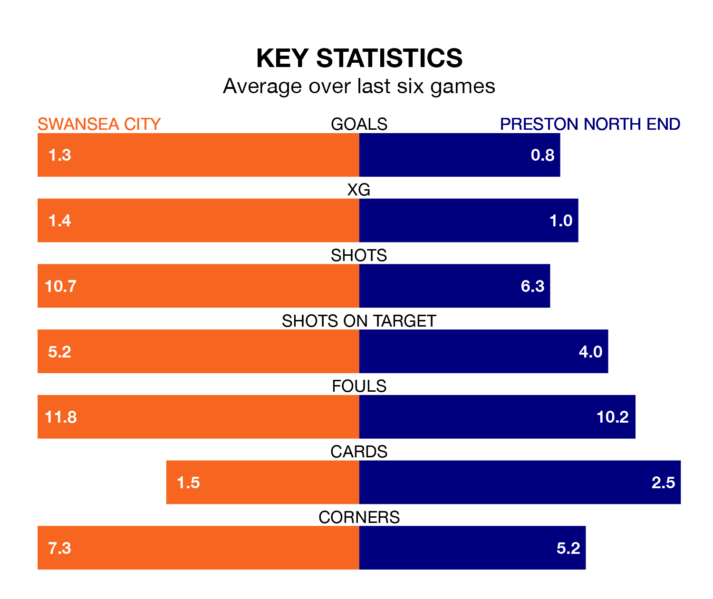

Preston North End come to the Swansea.com Stadium to play Swansea City on late Friday in poor form, having collected just four points from their last six games.
The visitors have won one and drawn one of their last six fixtures, while the Swans have a win and three draws.
In the last 10 years, Swansea and Preston have played each other on 11 occasions. Swansea won five of them, Preston four, and they drew twice.
On average, the Swans scored 1.3 goals and the Lilywhites 1.2 in those matches.
Their last meeting was on August 26, when Preston won 2-1 at home.
With 28 goals in 22 games so far this season, Preston are scoring at below the league average rate with 1.3 goals per game. And they are conceding more than average, letting in 38 goals at a rate of 1.7 per game.
Swansea, meanwhile, are average scorers, with 1.4 goals per game. They have also conceded 1.4 goals per game.
City are 18th in the table after 22 games, of which they have won six and drawn seven, earning 25 points.
North End are 10 places ahead of the Swans in eighth, with nine wins and five draws putting them on 32 points.
In Joël Piroe, the home team have one of the league's most on-form strikers so far this season. He has notched eight goals in 22 appearances, to sit seventh in the scoring charts.
His goal rate of one every 235 minutes is slightly quicker than that of Will Keane, the Lilywhites' top scorer with a goal every 175 minutes, and a total of six goals in 17 games.
Swansea's last match was on Saturday, a 2-1 loss against Middlesbrough, with Jamal Lowe getting the goal for the Swans.
Preston lost 5-1 against Watford last time out, also on Saturday, with Keane on the scoresheet.
